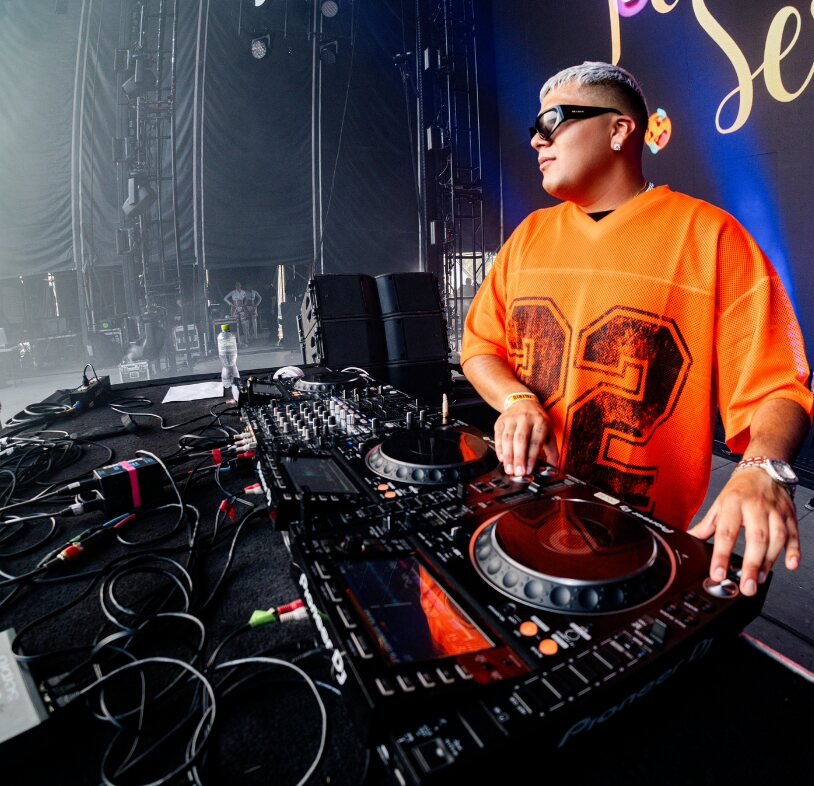
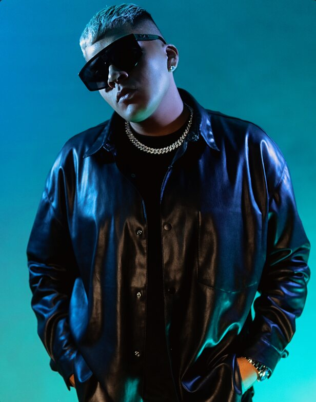

DJ & Productor

Originario de la Ciudad de México, J Mauri comenzó a mezclar a los 15 años y hoy suma más de 8 años de trayectoria como DJ y productor especializado en música urbana. Es una de las figuras principales del colectivo Perreo De Antes, con quien llevó su sonido de los clubes de CDMX a más de veinte recintos en México y a la escena de Medellín, Colombia, donde ha realizado dos giras desde 2023.
Ha compartido escenario con DJ Playero, Kevin Roldán, Bellakath, El Malilla y Carlos Cortés, entre otros, y ha sido DJ oficial en giras de Snow Tha Product, Yurgenis y Milo Mae. Se ha presentado en EDC México (2022 y 2025), Coca-Cola Flow Fest, Dale Mixx Monterrey y el Festival Internacional Cervantino, además de ser DJ oficial de las campañas de Champion en México durante 2024 y 2025.
Como productor acumula más de 23 lanzamientos oficiales y cerca de 700,000 reproducciones en Spotify, con Déjate Llevar, Animal y Mundo Diferente como sus temas más escuchados. También ha producido para Samir Guerrero, Jey F, Milo Mae, Fumaratto y B. Costa, entre otros. Su lanzamiento más reciente es Ciudad Romántica (2026), un mixtape colaborativo.
Micrófono inalámbrico · Monitor de referencia · Agua embotellada · Hospitalidad básica · Espacio para artista, equipo técnico y management.
Las fotografías del equipo se incorporarán próximamente — la información técnica ya es definitiva.